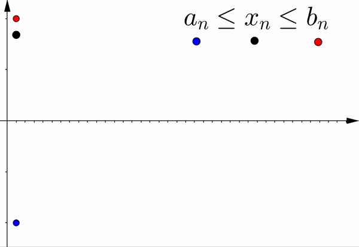

Mathematical Analysis
Lecture 3
2.1 Sequences
Definition 2.1.1. A sequence (of real numbers) is a function $x \colon \N \to \R.$ Instead of $x(n)$, we usually denote the $n$th element in the sequence by $x_n.$ We use the notation $\{ x_n \},$ or more precisely \begin{equation*} \{ x_n \}_{n=1}^\infty \end{equation*} to denote a sequence.
Other notations for $\{ x_n \}$ commonly used are: $$\left(x_n\right)_{n=1}^{\infty} \quad \text{and} \quad \{ x_n \}_{n\in\N}.$$
2.1 Sequences
Definition 2.1.2.
- A sequence $\{ x_n \}$ is bounded above if there exists a $ B\in \R$ such that $x_n\leq B$ for all $n\in \N$.
- A sequence $\{ x_n \}$ is bounded below if there exists a $ B\in \R$ such that $B \leq x_n $ for all $n\in \N$.
- A sequence $\{ x_n \}$ is bounded if there exists a $B \in \R$ such that \begin{equation*} \abs{x_n} \leq B \qquad \text{for all } n \in \N. \end{equation*}
In other words, the sequence $\{x_n\}$ is bounded whenever the set $\{ x_n : n \in \N \}$ is bounded, or equivalently when it is bounded as a function.
Example 2.1.1
If we need to give a concrete sequence, we often give each term as a formula in terms of $n$. For instance, $\left\{ \dfrac{1}{n} \right\}_{n=1}^\infty$, or simply $\left\{ \dfrac{1}{n} \right\}$, stands for the sequence $$\ds 1, \frac{1}{2}, \frac{1}{3}, \frac{1}{4}, \frac{1}{5}, \ldots $$ This is a bounded sequence.
Example 2.1.1
On the other hand, the sequence $\{ n \}$ stands for $$1,2,3,4,\ldots,$$ and this sequence is not bounded (why?).
2.1 Sequences
Convergence
Definition 2.1.3. A sequence $\{ x_n \}$ is said to converge to a number $L \in \R$ if for every $\epsilon > 0$, there exists an $M \in \N$ such that $\abs{x_n - L} \lt \epsilon$ for all $n \geq M$. The number $L$ is said to be the limit of $\{ x_n \}$. We write \begin{equation*} \lim_{n\to \infty} x_n := L . \end{equation*}

2.1 Sequences
Convergence
Example 2.1.2.
The sequence $\{x_n\}_{n=1}^{\infty}$, where $x_n =c$, $\forall n \in \N$ and $c\in\R$ fixed is known as the constant sequence.
This is a sequence $$\{ c \} = c,c,c,\ldots$$ consisting of a single constant $c$ repeating indefinitely. It converges to $c$.
Example 2.1.3.
Claim: The sequence $\left\{ \dfrac{1}{n} \right\}$ is convergent and \begin{equation*} \lim_{n\to \infty} \frac{1}{n} = 0 . \end{equation*}
Proof. Given an $\vre > 0$, we find an $N \in \N$ such that $0 \lt \dfrac{1}{N} \lt \vre$ (thanks to the Archimedean property 😎).
Then for all $n \geq N$,
$\ds \abs{x_n - 0} = \abs{\frac{1}{n}}$ $\ds = \frac{1}{n}$ $\ds \leq \frac{1}{N}$ $ \lt \vre .$ $\;\;\blacksquare$
Example 2.1.4.
Claim: The sequence $\{ {(-1)}^n \}$ is divergent.
Proof. If there were a limit $L$, then for $\vre = \dfrac{1}{2}$ we expect an $N$ that satisfies the definition.
Suppose such an $N$ exists. Then for an even $n \geq N$ we compute
$\ds \frac{1}{2} > \abs{x_n - L} $
$\ds = \abs{1 - L}\,$
and $\,\ds \frac{1}{2} > \abs{x_{n+1} - L} $
$ = \abs{-1 - L} .$
Example 2.1.4.
Claim: The sequence $\{ {(-1)}^n \}$ is divergent.
Proof. If there were a limit $L$, then for $\vre = \dfrac{1}{2}$ we expect an $N$ that satisfies the definition.
Suppose such an $N$ exists. Then for an even $n \geq N$ we compute
$\ds \frac{1}{2} > \abs{x_n - L} $ $\ds = \abs{1 - L}\,$ and $\,\ds \frac{1}{2} > \abs{x_{n+1} - L} $ $ = \abs{-1 - L} .$
But $\,\ds 2 = \abs{1 - L - (-1 -L)}$ $\ds \leq \abs{1 - L} + \abs{-1 -L}$
$\qquad \quad \; \;\lt\ds\frac{1}{2} + \frac{1}{2}$ $ = 1 ,$
which is a contradiction. ❗
2.1 Sequences
More useful results
Theorem 2.1.1. A convergent sequence has a unique limit.
Proof. 📝 = Exercise.
👀 Complementary reading 📖
2.1 Sequences
More useful results
Theorem 2.1.2. A convergent sequence $\{ x_n \}$ is bounded.
Proof of Theorem 2.1.2.
Proof. Suppose $\{ x_n \}$ converges to $L$. Thus there exists an $N \in \N$ such that for all $n \geq N$, we have $\abs{x_n - L} \lt 1$. Let $C_1 := \abs{L}+1$ and note that for $n \geq N$,
$\abs{x_n} = \abs{x_n - L + L}$ $\leq \abs{x_n - L} + \abs{L}$
$\qquad\qquad\quad\qquad \lt 1 + \abs{L} $ $=C_1 .$
The set $\{ \abs{x_1}, \abs{x_2}, \ldots, \abs{x_{N-1}} \}$ is a finite set and hence let
$ C_2 := \max \{ \abs{x_1}, \abs{x_2}, \ldots, \abs{x_{N-1}} \} . $
Let $B := \max \{ C_1, C_2 \}$. Then for all $n \in \N$, $\abs{x_n} \leq B. \; \blacksquare$
2.2 Monote sequences
Definition 2.2.1 A sequence $\{ x_n \}$ is called:
- monotone increasing if $x_n \leq x_{n+1}$ for all $n \in \N$.
- strictly monotone increasing if $x_n \lt x_{n+1}$ for all $n \in \N$.
- monotone decreasing if $x_n \geq x_{n+1}$ for all $n \in \N$.
- strictly monotone decreasing if $x_n > x_{n+1}$ for all $n \in \N$.
2.2 Monote sequences
Theorem 2.2.1. A monotone sequence $\{ x_n \}$ is bounded if and only if it is convergent.
This theorem is also known as the
Monotone Convergence Theorem.
2.2 Monote sequences
Theorem 2.2.1. A monotone sequence $\{ x_n \}$ is bounded if and only if it is convergent.
Proof. Let $\{ x_n \}$ be monotone and bounded. To prove that $\{ x_n \}$ converges using the definition of convergence, we need a candidate for the limit. Let's assume that the sequence is increasing (the decreasing case is handled similarly), and consider the set of points $\{x_n : n\in \N\}.$ By assumption, this set is bounded, so define $$s := \sup\, \{x_n : n \in \N\}.$$ It seems reasonable to claim that $\lim \{x_n\} = s.$
2.2 Monote sequences
Theorem 2.2.1. A monotone sequence $\{ x_n \}$ is bounded if and only if it is convergent.
Proof. It seems reasonable to claim that $\lim \{x_n\} = s$. To prove this, let $\vre >0.$ Because $s$ is the least upper bound of $\{x_n : n \in \N\},$ $s-\vre$ is not an upper bound, so there exists a point in the sequence $x_N$ such that $s-\vre \lt x_N.$ Now, the fact that $\{x_n \}$ is increasing implies that if $n\geq N,$ then $x_N\leq x_n.$ Thus we have
$ s- \vre \lt x_N \leq x_n \leq s$
$ \lt s+\vre $
$ \Rightarrow s- \vre \lt x_n \lt s+\vre$
$ \Rightarrow - \vre \lt x_n - s \lt \vre.$
Therefore $\abs{x_n-s}\lt\vre$, as desired. $\;\blacksquare$
2.2 Monote sequences
If $\{ x_n \}$ is monotone increasing and bounded, then \begin{equation*} \lim_{n\to \infty} x_n = \sup \{ x_n : n \in \N \} . \end{equation*}
If $\{ x_n \}$ is monotone decreasing and bounded, then \begin{equation*} \lim_{n\to \infty} x_n = \inf \{ x_n : n \in \N \} . \end{equation*}
Bounded & Monotone
| Increasing | Decreasing |
|---|

|

|
| $\displaystyle \lim_{n\to \infty} x_n = \sup \{ x_n : n \in \N \}$ | $\displaystyle \lim_{n\to \infty} x_n = \inf \{ x_n : n \in \N \}$ |
Example 2.2.1.
Claim: The sequence $\left\{ \dfrac{1}{\sqrt{n}} \right\}$ is monotone and bounded and $$\lim \frac{1}{\sqrt{n}} = 0.$$
Example 2.2.1.
Claim: The sequence $\left\{ \dfrac{1}{\sqrt{n}} \right\}$ is monotone and bounded and $\ds\lim \frac{1}{\sqrt{n}} = 0.$
Proof. The sequence is bounded below as $\dfrac{1}{\sqrt{n}} > 0$ for all $n \in \N$. Let us show that it is monotone decreasing. We start with $\sqrt{n+1} \geq \sqrt{n}$ (why is that true?). From this inequality we obtain \begin{equation*} \frac{1}{\sqrt{n+1}} \leq \frac{1}{\sqrt{n}} . \end{equation*}
So the sequence is monotone decreasing and bounded below (hence bounded).
Example 2.2.1.
Claim: The sequence $\left\{ \dfrac{1}{\sqrt{n}} \right\}$ is monotone and bounded and $\ds\lim \frac{1}{\sqrt{n}} = 0.$
Proof. The Monotone Convergence Theorem (Theo 2.2.1) says that that the sequence is convergent and \begin{equation*} \lim_{n\to \infty} \frac{1}{\sqrt{n}} = \inf \left\{ \frac{1}{\sqrt{n}} : n \in \N \right\} . \end{equation*} We already know that the infimum is greater than or equal to 0, as 0 is a lower bound.
Example 2.2.1.
Claim: The sequence $\left\{ \dfrac{1}{\sqrt{n}} \right\}$ is monotone and bounded and $\ds\lim \frac{1}{\sqrt{n}} = 0.$
Proof. Take a number $b \geq 0$ such that $b \leq \frac{1}{\sqrt{n}}$ for all $n$. We square both sides to obtain \begin{equation*} b^2 \leq \frac{1}{n} \quad \text{for all } \; n \in \N. \end{equation*} This implies that $b^2 \leq 0$. As $b^2 \geq 0$ as well, we have $b^2 = 0$ and so $b = 0$. Hence, $b=0$ is the greatest lower bound, and $$\lim \dfrac{1}{\sqrt{n}} = 0.$$
Example 2.2.2.
A warning: Before using the Monotone Convergence Theorem (Theo 2.2.1) to conclude a sequence converges we must show that a monotone sequence is bounded. The sequence $$\left\{ 1 + \frac{1}{2} + \cdots + \frac{1}{n} \right\}$$ is a monotone increasing sequence that grows very slowly. We will see, once we get to series, that this sequence has no upper bound and so does not converge.
It is not at all obvious that this sequence has no upper bound. 😥
2.2.1 Subsequences
Definition 2.2.2. Let $\{ x_n \}$ be a sequence. Let $\{ n_i \}$ be a strictly increasing sequence of natural numbers, that is, $n_i \lt n_{i+1}$ for all $i$ (in other words $n_1 \lt n_2 \lt n_3 \lt \cdots$). The sequence \begin{equation*} \{ x_{n_i} \}_{i=1}^\infty \end{equation*} is called a subsequence of $\{ x_n \}.$
2.2.1 Subsequences
Theorem 2.2.2. If $\{ x_n \}$ is a convergent sequence, then every subsequence $\{ x_{n_i} \}$ is also convergent, and \begin{equation*} \lim_{n\to \infty} x_n = \lim_{i\to \infty} x_{n_i} . \end{equation*}
2.2.1 Subsequences
Theorem 2.2.2. If $\{ x_n \}$ is a convergent sequence, then every subsequence $\{ x_{n_i} \}$ is also convergent, and \begin{equation*} \lim_{n\to \infty} x_n = \lim_{i\to \infty} x_{n_i} . \end{equation*}
Proof. Suppose $\lim_{n\to \infty} x_n = L.$ So for every $\vre > 0$ there is an $N \in \N$ such that for all $n \geq N,$ \begin{equation*} \abs{x_n - L} \lt \vre . \end{equation*} It is not hard to prove (do it! 📝) by Induction that $n_i \geq i.$ Hence $i \geq N$ implies $n_i \geq N.$ Thus, for all $i \geq N,$
$\abs{x_{n_i} - L} \lt \vre .$ $\;\blacksquare$
2.3 Basic facts about limits of sequences
|
Theorem 2.3.1 (Squeeze Theorem) Let $\{ a_n \},$ $\{ b_n \},$ and $\{ x_n \}$ be sequences such that \begin{equation*} a_n \leq x_n \leq b_n \quad \text{for all } n \in \N. \end{equation*} Suppose $\{ a_n \}$ and $\{ b_n \}$ converge and \begin{equation*} \lim_{n\to \infty} a_n = \lim_{n\to \infty} b_n . \end{equation*} Then $\{ x_n \}$ converges and \begin{equation*} \lim_{n\to \infty} x_n = \lim_{n\to \infty} a_n = \lim_{n\to \infty} b_n . \end{equation*} |
|---|
2.3 Basic facts about limits of sequences
|
Theorem 2.3.1 (Squeeze Theorem) Let $\{ a_n \},$ $\{ b_n \},$ and $\{ x_n \}$ be sequences such that \begin{equation*} a_n \leq x_n \leq b_n \quad \text{for all } n \in \N. \end{equation*} Suppose $\{ a_n \}$ and $\{ b_n \}$ converge and \begin{equation*} \lim_{n\to \infty} a_n = \lim_{n\to \infty} b_n . \end{equation*} Then $\{ x_n \}$ converges and \begin{equation*} \lim_{n\to \infty} x_n = \lim_{n\to \infty} a_n = \lim_{n\to \infty} b_n . \end{equation*} |
 |
|---|
Proof of Theorem 2.3.1.
Let $L := \lim\, a_n = \lim\, b_n.$ Let $\vre > 0$ be given. Find an $N_1$ such that for all $n \geq N_1,$ we have that $\abs{a_n-L} \lt \vre$, and an $N_2$ such that for all $n \geq N_2,$ we have $\abs{b_n-L} \lt \vre.$ Set $N := \max \{N_1, N_2 \}.$ Suppose $n \geq N.$ In particular, $L - a_n \lt \vre,$ or $L - \vre \lt a_n.$ Similarly, $b_n \lt L + \vre.$ Putting everything together, we find \begin{equation*} L - \vre \lt a_n \leq x_n \leq b_n \lt L + \vre . \end{equation*}
In other words, $-\vre \lt x_n-L \lt \vre$ or $\abs{x_n-L} \lt \vre$. So $\{x_n\}$ converges to $L.$ $\blacksquare$
Example 2.3.1.
Consider the sequence $\left\{ \dfrac{1}{n\sqrt{n}} \right \}.$ Since $\sqrt{n} \geq 1$ for all $n \in \N,$ we have \begin{equation*} 0 \leq \frac{1}{n\sqrt{n}} \leq \frac{1}{n} \text{ for all } n \in \N. \end{equation*} We already know $\lim \dfrac{1}{n} = 0.$ Hence, using the constant sequence $\{ 0 \}$ and the sequence $\left\{ \frac{1}{n} \right\}$ in the squeeze lemma, \begin{equation*} \text{we conclude } \;\lim_{n\to\infty} \frac{1}{n\sqrt{n}} = 0 . \end{equation*}
2.3 Basic facts about limits of sequences
Theorem 2.3.2 Let $\{ x_n \}$ and $\{ y_n \}$ be convergent sequences and \begin{equation*} x_n \leq y_n , \end{equation*} for all $n \in \N$. Then \begin{equation*} \lim_{n\to\infty} x_n \leq \lim_{n\to\infty} y_n . \end{equation*}
👀 Complementary reading 📖
2.3 Basic facts about limits of sequences
Corollary 2.3.1.
- If $\{ x_n \}$ is a convergent sequence such that $x_n \geq 0,$ then \begin{equation*} \lim_{n\to\infty} x_n \geq 0. \end{equation*}
- Let $a,b \in \R$ and let $\{ x_n \}$ be a convergent sequence such that $ a \leq x_n \leq b ,$ for all $n \in \N$. Then \begin{equation*} a \leq \lim_{n\to\infty} x_n \leq b. \end{equation*}
👀 Complementary reading 📖